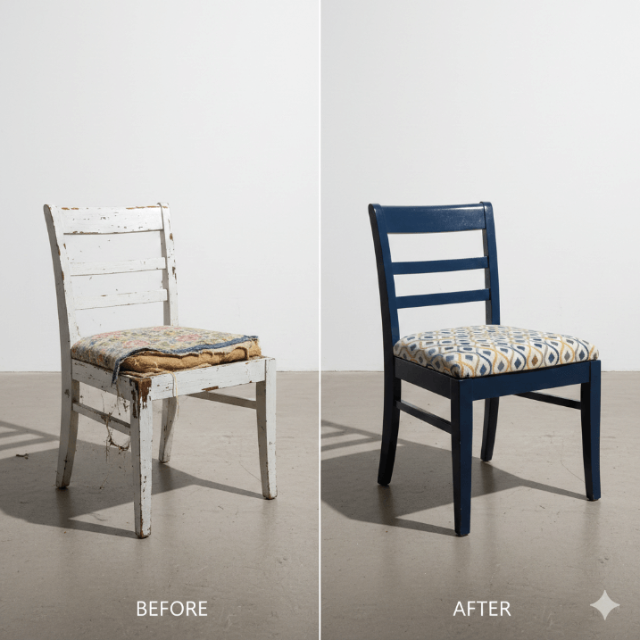
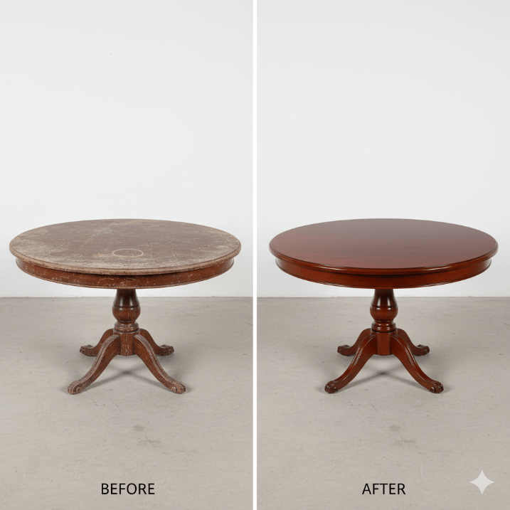
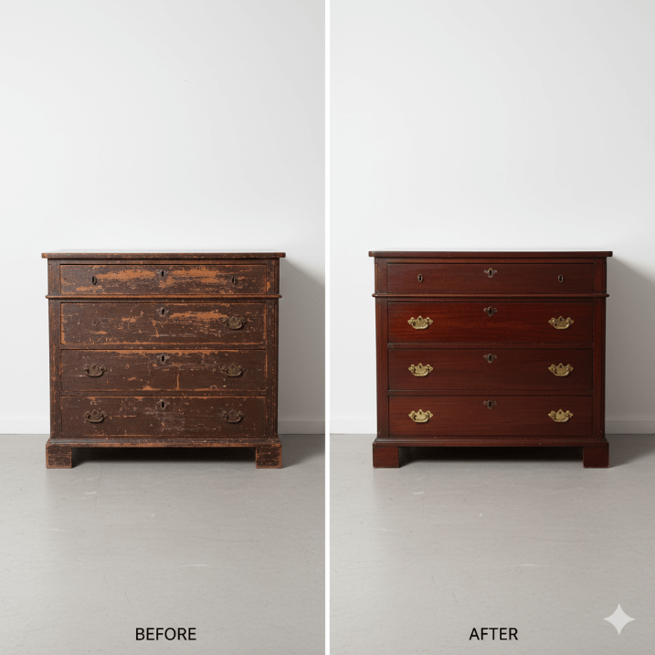

Huonekalujen kunnostus
Anna vanhalle huonekalulle uusi elämä Joensuussa ja Pohjois-Karjalassa
Palauta huonekalujen alkuperäinen loisto Joensuussa
Vanhat huonekalut kantavat mukanaan tarinoita ja muistoja. Niiden ei tarvitse päätyä kaatopaikalle kulumisen tai vaurioiden takia. Kunnostamme huonekalut ammattitaidolla, jolloin ne saavat uuden elämän ja voivat palvella vielä sukupolvien yli.
Kunnostamme kaikenlaisia huonekaluja – tuoleja, pöytiä, kaappeja, lipastoja, sohvia ja antiikkikalusteita. Korjaamme rakenteelliset vauriot, uusimme pintakäsittelyt, vaihdamme rikkoutuneet osat ja vahvistamme heikentyneitä liitoksia. Lopputulos on huonekalu, joka näyttää kauniilta ja toimii moitteettomasti myös vaativissa perintökalustekohteissa.
Miksi kunnostaa vanhat huonekalut?
- Ekologinen valinta
- Kustannustehokas
- Ainutlaatuisuus
- Tunnearvoa
- Laadukas käsityö
- Arvo nousee
Kunnostuspalvelumme
Pintakäsittely
Hiomme vanhan pinnan pois ja käsittelemme puun uudelleen. Voit valita alkuperäisen sävyn tai kokonaan uuden värin.
- Vanhan maalin/lakan poisto
- Puun hiominen ja tasoitus
- Öljy-, vaha- tai lakkakäsittely
- Maalaus haluttuun sävyyn
Rakenteiden korjaus
Korjaamme löystyneet liitokset, vaihdamme murtuneita osia ja vahvistamme rakenteita.
- Liimaliitokset
- Tappien uusiminen
- Halkeamien korjaus
- Rungon vahvistaminen
Verhoilu
Uusimme tuolien ja sohvien verhoilut. Voit valita alkuperäisen kankkaan tai modernisoida uudella.
- Vanhan verhoilun poisto
- Jousitus ja pehmusteet
- Uusi kangas
- Ammattimainen verhoilu
Osien valmistus
Valmistamme puuttuvat tai rikkoutuneet osat - laatikkojen pohjat, ovet, vetimet tai koristeet.
- Alkuperäisten osien jäljentäminen
- Laatikkojen korjaus
- Ovien sorvaus
- Koristeltujen osien valmistus
Kunnostusesimerkkejä
Katso, miten huonekalut muuttuvat kunnostuksen jälkeen:

Ruokapöydän tuolit
Kuluneet tuolit saivat uuden pinnan ja verhoilun. Tuolit näyttävät nyt kuin uusilta.

Antiikkipöytä
Vanha pöytä kunnostettiin hiomalla ja öljyämällä. Alkuperäinen kauneus palautettiin.

Perintölipasto
Isoäidin lipasto sai uuden elämän. Rakenteet korjattiin ja pinta maalattiin uudelleen.
Kunnostusprosessi
1. Arviointi
Tuot huonekalun meille tai tulemme katsomaan sitä luoksesi. Arvioimme kunnostustarpeen ja kerromme, mitä tehdä pitää.
2. Tarjous
Teemme tarjouksen kunnostuksesta. Kerromme tarkan hinnan ja aikataulun. Sovimme yhdessä kunnostuksen laajuudesta.
3. Kunnostustyöt
Teemme kunnostuksen huolellisesti omassa verstaassamme. Käytämme perinteisiä menetelmiä ja laadukkaita materiaaleja.
4. Luovutus
Kun huonekalu on valmis, voit noutaa sen tai toimitamme sen kotiin. Saat myös hoito-ohjeet.
Onko sinulla kunnostettavaa?
Tuo huonekalu meille arvioitavaksi tai lähetä kuva. Kerromme, mitä voimme tehdä ja paljonko se maksaa.
Ota yhteyttä